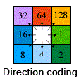

NetCDF and namelist input data#
The model requires a NetCDF file of spatio(temporal) parameters and a Fortran namelist file of constants. The config file is responsible for telling the model where these input data are located (via the &data group).
The recommended way of generating these files is to use the NanoFASE data module. See Compiling data with the NanoFASE data module for details of how to use this data module.
This page gives a breakdown of the parameters required in the NetCDF and Fortran namelist file. These are mostly similar to those required by the NanoFASE data module, but also contains a selection of secondary derived variables that are calculated by the NanoFASE data module from its inputs. Example NetCDF and constants files are given in the data.example directory.
NetCDF file#
The NetCDF file stores any data that aren’t constant (0D). Parameters have at least one of the following dimensions, as denoted in brackets after the variable name on this page:
t: Time dimensionx,y: Spatial dimensionsd: Number of spatial dimensions, always equal to 2w: Index of inflow to a grid cell, maximum of 7box: Used to define the bounding box of the grid cells, always equal to 4 to represent each side of the bounding boxp: Index of point source within a grid celll: Index representing land use categories
Warning
If you are manually creating this NetCDF file, pay careful attention to units, which might not be the conventional units used for these parameters. Notably, the length of the model timestep is used as a unit (e.g. m/timestep as the unit for runoff), meaning that changing timestep length means re-calculating these input data.
Environmental parameters#
This selection of parameters pertains to the geographical region modelled, such as its climate, topography and soil properties.
int dem(y, x)Optional, if not present then default slope of 0.0005 m/m is assumed. Units: dm. Standard name:
height_above_mean_sea_level.
Digital elevation model (height above mean sea level). In the model, this is only used to calculate slope, whilst in the NanoFASE data module, it is used to calculate numerous secondary variables for input to the model.float quickflow(t, y, x)Required. Units: m/timestep. Standard name:
surface_runoff_flux.
Also called surface runoff, this is the component of runoff that is responsible for driving soil erosion.float runoff(t, y, x)Required. Units: m/timestep. Standard name:
runoff_flux.
This is the total runoff (subsurface and surface) that is routed by the model to provide surface water flows.float precip(t, y, x)Required. Units: m/timestep. Standard name:
rainfall_flux.
Amount of precipitation, used to drive soil percolation.float evap(t, y, x)Optional, defaults to 0. Units: m/timestep. Standard name:
water_evapotranspiration_flux.
Amount of evapotranspiration.
float soil_bulk_density(y, x)Required. Units: kg/m3.
Bulk density of soil, which is assumed constant in time.float soil_water_content_field_capacity(y, x)Required. Units: cm3/cm3. Standard name:
volume_fraction_of_condensed_water_in_soil_at_field_capacity.
Water content of the soil at field capacity, as a fraction. Assumed constant in time.float soil_water_content_saturation(y, x)Required. Units: cm3/cm3. Standard name:
volume_fraction_of_condensed_water_in_soil.
Water content of the soil at saturation, as a fraction. Assumed constant in time.float soil_hydraulic_conductivity(y, x)Required. Units: m/s. Standard name:
soil_hydraulic_conductivity_at_saturation.
The hydraulic conductivity of the soil, which is assumed constant in time.float soil_texture_clay_content(y, x)Required. Units: kg/kg. Standard name:
volume_fraction_of_clay_in_soil.
Clay content of the soil, as a fraction. Assumed constant in time.float soil_texture_sand_content(y, x)Required. Units: kg/kg. Standard name:
volume_fraction_of_sand_in_soil.
Sand content of the soil, as a fraction. Assumed constant in time.float soil_texture_silt_content(y, x)Required. Units: kg/kg. Standard name:
volume_fraction_of_silt_in_soil.
Silt content of the soil, as a fraction. Assumed constant in time.float soil_texture_coarse_frag_content(y, x)Required. Units: kg/kg.
Coarse fragment content of the soil, as a fraction. Assumed constant in time.float soil_usle_c_factor(y, x)Required. Unitless.
Universal Soil Loss Equation cover management factor.float soil_usle_p_factor(y, x)Required. Unitless.
Universal Soil Loss Equation support practice factor.float soil_usle_ls_factor(y, x)Required. Unitless.
Universal Soil Loss Equation slope length and steepness factor.
float land_use(l, y, x)Required. Unitless.
The fraction of the grid cell that is each of the NanoFASE model land use categories, indexed byl. The categories along this dimension are given by the following table:
Index value |
Land use category |
|---|---|
1 |
|
2 |
|
3 |
|
4 |
|
5 |
|
6 |
|
7 |
|
8 |
|
9 |
|
10 |
|
11 |
|
12 |
|
ubyte is_estuary(y, x)Required if config
include_estuary = .true., unitless.
Boolean variable dictating whether a grid cell’s waterbodies are estuaries (instead of freshwaters). 0 represents false, 1 represents true. This parameter is only required if the config optioninclude_estuaryis.true., otherwise the model assumes there are no estuaries.
Nanomaterial properties#
Most nanomaterial properties are constant, and therefore included only in the constants namelist file. However, it is possible to input two parameters relating to the attachment of nanomaterials to the soil matrix as spatial parameters, to account for the spatial heterogeneity of soil affecting these parameters. If both parameters are present, the model will use the soil_attachment_rate preferentially over the soil_attachment_efficiency (which is used to internally calculate attachment rates).
float soil_attachment_rate(y, x)Optional,
soil_attachment_efficiencyused to calculate rate if not present. Unit: /s.
The rate at which nanoparticles attach to the soil matrix.float soil_attachment_efficiency(y, x)Optional, value in constants namelist file used if not present. Unitless.
The attachment efficiency represents the probability that a collision between a nanoparticle and the soil matrix results in the sticking (attachment) of the nanoparticle.
Emissions#
The following parameters are used to define the emissions of nanomaterials to the environment. These are either areal (diffuse) emissions - assumed average across each grid cell, or point emissions, which are only to waters and snapped to the nearest waterbody within the model. Atmospheric inputs are provided by their own parameters, but are treated the same as areal emissions. Each point emission parameter actually has two parameters associated with it: the emission itself, and the exact (x, y) coordinates associated with that emission. If any of these parameters are excluded, they are presumed to be zero.
For brevity, we condense the multiple parameters using [x|y] notation. For example, emissions_areal_[water|soil]_[pristine|transformed|matrixembedded|dissolved] represents eight parameters: emissions_areal_water_pristine, emissions_areal_water_transformed, etc.
float emissions_areal_[water|soil]_[pristine|transformed|matrixembedded|dissolved](y, x)Optional, defaults to 0. Units: kg/m2/timestep.
Diffuse source emissions of pristine, transformed or matrix-embedded NM to waters or soils.float emissions_atmospheric_[dry|wet]depo_[pristine|transformed|matrixembedded|dissolved](y, x)Optional, defaults to 0. Units: kg/m2/timestep.
Emissions of pristine, transformed or matrix-embedded NM via atmospheric dry or wet deposition. Assumed to be split between soils and water according to the surface area of these compartments within each grid cell.float emissions_point_water_[pristine|transformed|matrixembedded|dissolved](p, y, x)Optional, defaults to 0. Units: kg/timestep.
Point source emissions of pristine, transformed or matrix-embedded NM to waters. The dimensionprepresents the number of point sources within a grid cell.float emissions_point_water_[pristine|transformed|matrixembedded|dissolved]_coords(d, p, y, x)Required for one form (pristine, transformed etc) if value given for corresponding point source. Units: m.
The projected (x, y) coordinates of the point source with samep, y, xindices. Only one coordinate is required across the different forms (pristine, transformed, matrix-embedded and dissolved), and therefore this variable only needs to be provided one. If coordinates for multiple forms are specified, the model will use only one in order of preference: dissolved, transformed, matrix-embedded, pristine. For example, ifemissions_point_water_pristine_coordsandemissions_point_water_dissolved_coordsare provided, the value foremissions_point_water_dissolved_coordswill be used for all of the forms from this point source.
Note
We appreciate that dealing with point sources can be unintuitive. This is likely to be changed to be more logical in future versions of the model.
Calibration parameters#
The following parameters related to sediment dynamics are intended to be calibrated against observed suspended sediment concentrations. They can either be constant across the entire modelled region - and therefore specified in the constants namelist file instead of the NetCDF file - or spatial. If specified in both the NetCDF and constants namelist file, the NetCDF parameter is used.
float resuspension_alpha(y, x)Optional, defaults to value in constants namelist, unitless.
Shear velocity coefficient, used to calculate resuspension flux. Corresponds to parameter \(a_7\) in Lazar et al. [4].float resuspension_beta(y, x)Optional, defaults to value in constants namelist, units: s2/kg.
Entrainment coefficient, used to calculate resuspension flux. Corresponds to parameter \(a_8\) in Lazar et al. [4].float deposition_alpha(y, x)Optional, defaults to value in constants namelist, unitless.
Calibration parameter used to control sediment deposition. Corresponds to the parameter set to 38.1 in Equation 11 of Zhiyao et al. [8].float deposition_beta(y, x)Optional, defaults to value in constants namelist, unitless.
Calibration parameter used to control sediment deposition. Corresponds to the parameter set to 0.93 in Equation 11 of Zhiyao et al. [8].float bank_erosion_alpha(y, x)Optional, defaults to value in constants namelist, units: kg/m.
Bank erosion scaling factor, used to calculate sediment yield from bank erosion. Corresponds to parameter \(a_9\) in Lazar et al. [4].float bank_erosion_beta(y, x)Optional, defaults to value in constants namelist, unitless.
Bank erosion non-linear coefficient, used to calculate sediment yield from bank erosion. Corresponds to parameter \(a_{10}\) in Lazar et al. [4].float sediment_transport_a(y, x)Optional, defaults to value in constants namelist, units: kg/m2/km2.
Sediment transport capacity scaling factor. Corresponds to parameter \(a_4\) in Lazar et al. [4].float sediment_transport_b(y, x)Optional, defaults to value in constants namelist, units: m2/s.
Sediment transport capacity direct runoff threshold. Corresponds to parameter \(a_5\) in Lazar et al. [4].float sediment_transport_c(y, x)Optional, defaults to value in constants namelist, unitless.
Sediment transport capacity non-linear coefficient. Corresponds to parameter \(a_6\) in Lazar et al. [4].
Secondary derived variables#
These are variables that are only required by the NetCDF file and not the NanoFASE data module. The latter uses the above input variables to derive these secondary variables.
int crsRequired. The
crsvariable is an empty variable whose attributes define the Coordinate Reference System used by the model, to comply with CF conventions and to enable the dataset to be read by various spatial data software. It is recommended to include aspatial_refandcrs_wktattribute, though the latter is the only used by the model internally (and only to write to the output data).int t(t)Required, coordinate variable, units: seconds since start of simulation period.
Coordinate variable that maps timestep index to a real timestamp.int x(x)Required, coordinate variable, units: metres from origin of projected CRS.
Coordinate variable that maps spatial x index to a real projected x position.int y(y)Required, coordinate variable, units: metres from origin of projected CRS.
Coordinate variable that maps spatial y index to a real projected y position.int grid_shape(d)Required. Unitless
Number of grid cells along each (x, y) grid axis.float grid_res(d)Required, units: metres
Grid resolution - the size of each grid cell.float grid_bounds(box)Required, units: metres
Coordinates of the bounding box for the model grid, in order (left, top, right, bottom).
The following variables are ultimately deduced from the digital elevation model (DEM) and are used to define the surface water network within the model, meaning the surface water network is automatically deduced and does not need to be provided as an input (see Surface water network).

int flow_dir(y, x)Required, unitless
Flow direction of water in the grid cell, relating to the topography and deduced from the DEM. Uses the standard eight-direction (D8) flow direction encoding.short outflow(y, x, d)Required, unitless
The (x, y) index of the outflow grid cell.short inflows(y, x, w, d)Required, unitless
The (x, y) indices of the inflowing grid cells, of which there may be up to 7 (see Surface water network).short n_waterbodies(y, x)Required, unitless
The number of waterbodies in each grid cell.ubyte is_headwater(y, x)Required, unitless
Is this cell a headwater with no inflows? 0 represents false, 1 represents true.
Constants namelist file#
Parameters that are constant across space and time are provided via a text-based Fortran namelist file. This file is split into separate groups: allocatable_array_sizes, nanomaterial, water, sediment, soil and earthworm_densities.
Note
As well as the below parameters, the model also accepts a host of parameters related to biotic uptake. This process is still experimental and so these parameters are not yet documented.
allocatable_array_sizes group#
One of the quirks of Fortran namelist files is that any parameter in the namelist that is an allocatable array must have a corresponding parameter in the file that is the size of the array, so that the model can allocate the correct amount of memory before reading the array in. This means that every array parameter in the NanoFASE model constants namelist has a corresponding parameter in the allocatable_array_sizes group, which is named the array parameter name prepended with n_.
If you are using the NanoFASE data module (see Compiling data with the NanoFASE data module) - which is recommended - you don’t have to worry about these allocatable array sizes, as the module automatically writes the allocatable_array_sizes group when compiling input data.
For completeness, the array size parameters that must be specified, if their corresponding array parameter is present, is as follows:
n_default_nm_size_distribution
n_default_spm_size_distribution
n_default_matrixembedded_distribution_to_spm
n_vertical_distribution
n_porosity
n_spm_density_by_size_class
n_intial_mass
n_fractional_composition_distribution
n_estuary_mouth_coords
nanomaterial group#
nm_densityRequired, units: kg/m3.
The average density of the nanomaterial modelled.default_nm_size_distributionRequired, unitless
An array of the same length as the number of NM size classes (given by config). This is used to apply a proportion of NM mass in each size class to emissions data. It is a percentage, so as an example, if a model configuration has five size classes, and the mass was distributed evenly across them, thendefault_nm_size_distribution = 20, 20, 20, 20, 20.
water group#
See also Sediment calibration parameters.
river_attachment_efficiencyRequired, unitless.
The attachment efficiency represents the probability that a collision between a nanoparticle and suspended particulate matter in rivers results in the sticking (attachment) of the nanoparticle, thus yielding is available for sediment deposition.k_diss_[pristine|transformed]Optional, defaults to 0, units: /s.
Dissolution rate of pristine or transformed NMs.k_transform_pristineOptional, defaults to 0, units: /s.
The rate at which pristine NM transforms to thetransformedform.river_meandering_factorOptional, defaults to calculation based on grid size, unitless.
Meandering factor to account for rivers not being straight lines. If not present, meandering factor is estimated from the grid cell size, according to \(f_m = 1.024 - 0.077 * \ln (200 / (dx + dy))\) [3].[min|max]_water_temperatureOptional, defaults to 4oC (min) or 21oC (max), units: oC.
Average minimum or maximum water temperature across the year. Calculates daily water temperature timeseries using a cosine curve based on these values.min_water_temperature_day_of_yearOptional, defaults to 32, unitless.
Day of the year on which the minimum water temperature usually occurs, as an integer. Defaults to 32, which represents the first day of February. Used along with min/max water temperature to calculate water temperature timeseries.shear_rateOptional, defaults to 10 /s, units: /s.
Shear rate at the water-sediment interface, used for calculating resuspension. Defaults to 10 /s [1].
Estuary parameters#
Parameters pertaining to the estuary are required if the model domain has an estuary, as specified by the is_estuary spatial variable and config include_estuary option. Otherwise, these parameters can be excluded.
estuary_tidal_m2Required if model domain has estuary, unitless.
The M2 component of the tidal harmonics.estuary_tidal_s2Required if model domain has estuary, unitless.
The S2 component of the tidal harmonics.estuary_mouth_coordsRequired if model domain has estuary, units: m.
Position of the estuary mouth as (x, y) coordinates. Used to calculute upstream estuary dimensions based on exponential regression dependent on distance to estuary mouth.estuary_[mean_depth|width]_exp[a|b]Required if model domain has estuary, unitless.
Parametersaandbcontrolling the dependence of the estuary mean depth or width on distance to the mouth. For example, parametersestuary_width_expaandestuary_width_expbare used to calculate the width of the estuary upstream by a distance ofdby the relationwidth = estuary_width_expa * exp(-estuary_width_expb * d).estuary_meandering_factorOptional, defaults to calculation based on grid size, unitless.
Meandering factor to account for estuaries not being straight lines. If not present, meandering factor is estimated from the grid cell size, according to \(f_m = 1.024 - 0.077 * \ln (200 / (dx + dy))\) [3].estuary_attachment_efficiencyRequired if model domain has estuary, unitless.
The attachment efficiency represents the probability that a collision between a nanoparticle and suspended particulate matter in the estuary results in the sticking (attachment) of the nanoparticle, thus yielding is available for sediment deposition.
soil group#
darcy_velocityOptional, defaults to 9e-6 m/s, units: m/s.
The Darcy approach velocity is used to calculate the attachment rate of NMs. A default of 9e-6 m/s is used [5, 7].default_porosityRequired, unitless.
Porosity of the soil profile.hamaker_constantRequired, units: J.
Soil Hamaker constant, which is used to calculate the attachment rate of NMs.particle_densityRequired, units: kg/m3.
Average density of soil particles.erosivity_[a1|a2|a3|b]Required, unitless.
These four parameters are used to calculate a soil erosivity factor for use in predicting soil erosion yields. Based on a Revised Universal Soil Loss (RUSLE), with R-factor calculated from rainfall kinetic energy (see Davison et al. [2]) and K-factor based on a modified Morgan-Morgan-Finney [6].soil_attachment_efficiencyOptional, defaults to 0 if corresponding parameter not present in NetCDF file, unitless.
The attachment efficiency represents the probability that a collision between a nanoparticle and the soil matrix results in the sticking (attachment) of the nanoparticle. If a spatial version of this parameter is not present in the NetCDF file, this constant value is used.
sediment group#
porosityRequired, unitless.
Average sediment porosity.initial_massRequired, units: kg/m2.
Array that must be the same length as the number of sediment size classes (n_spm_size_classesin config), representing the mass of each sediment size class at the start of the model run.fractional_composition_distributionRequired, unitless.
Array that must be the same length as the number of sediment fractional compositions (n_fractional_compositionsin config). Represents the default distribution of sediment mass across fractional compositions, as a percentage.default_spm_size_distributionRequired, unitless.
Array that must be the same length as the number of sediment size classes (n_spm_size_classesin config). This is the default size distribution applied to sediment particles, as a percentage, when there is no other information, such as from soil erosion yields.default_matrixembedded_distribution_to_spmRequired, unitless.
Array that must be the same length as the number of sediment size classes (n_spm_size_classesin config). This is the default size distribution that is used to proportion matrix-embedded releases of NM to sediment size classes.spm_density_by_size_classRequired, units: kg/m3.
Array that must be the same lenth as the number of sediment size classes (n_spm_size_classesin config). Represents the density of the sediment in each size class.
Note
There are also a handful of parameters related to sediment enrichment, but this process is not fully implemented yet and therefore not documented.
Sediment calibration parameters#
If spatial sediment calibration parameters (see Calibration parameters) are not provided, the model uses constant equivalents provided in the constants namelist file, split across the soil and water groups. The description and units remain as per for the NetCDF file. Note that the sediment transport capacity parameters are in the soil group, whilst the remaining parameters are in the water group. Different resuspension parameters can be provided for estuary and freshwaters, and if no value for estuary is given, the freshwater value is used. If the parameters are not present in either the NetCDF or constants namelist file, the following defaults are used:
&water
resuspension_alpha = <required if not present in NetCDF>
resuspension_beta = <required if not present in NetCDF>
resuspension_alpha_estuary = <defaults to resuspension_alpha>
resuspension_beta_estuary = <defaults to resuspension_beta>
deposition_alpha = 38.1_dp
deposition_beta = 0.93_dp
bank_erosion_alpha = 1e-9_dp
bank_erosion_beta = 1.0_dp
\
&soil
sediment_transport_a = 2e-9_dp
sediment_transport_b = 0.0_dp
sediment_transport_c = 0.2_dp
\
earthworm_densities group#
This group is a list of earthworm densities per NanoFASE land use category, plus the vertical distribution of these earthworm densities across soil layers. All parameters are required and have units of individuals/m2. The following values are reasonable estimates across the different land use categories in the UK, for a 3-layer soil profile with depths of 5, 15 and 20 cms, respectively.
&earthworm_densities
arable = 30
coniferous = 150
deciduous = 400
grassland = 250
heathland = 20
urban_capped = 0
urban_gardens = 150
urban_parks = 250
vertical_distribution = 50, 35, 15
/